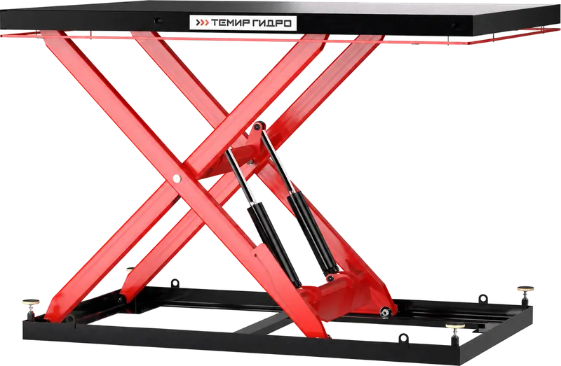

Та же кнопка, что сейчас на сайте (объёмные буквы поворачиваются за мышью, по клику — оборот), но разного цвета. Фон — белый лист в клетку и рендер 1X, как на странице модели, чтобы было видно, что выделяется, а что сливается.
Золотое лицо с переливом и бронзовый бок, по буквам иногда пробегает блик. Ярко и «дорого», на белом и рядом с красным читается сразу.

То же золотое лицо, но бок графитовый, почти чёрный. Контраст сильнее, чем у первого, выглядит строже, «как шильдик».
Жёлтое лицо и чёрный бок — как сигнальная разметка на наших платформах. Самый заметный и «промышленный».
Серебристое лицо с бликом, тёмно-серый бок — как хромированный шток цилиндра. Спокойнее золота, но всё равно металлический.
Белое лицо с тонкой красной обводкой и толстый красный бок. Остаётся в цветах сайта, но выделяется лучше нынешнего красного.
Подвигайте мышью по странице и нажмите на буквы. Скажите номер — или что смешать (например, золото с чуть более тёмным боком) — перенесу на сайт.